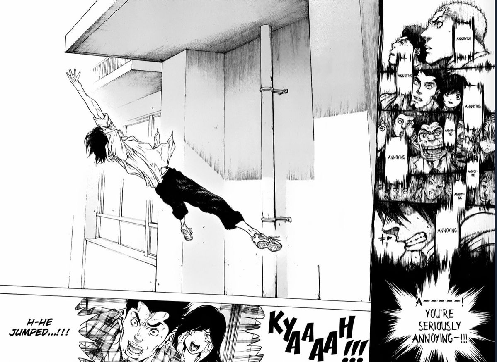
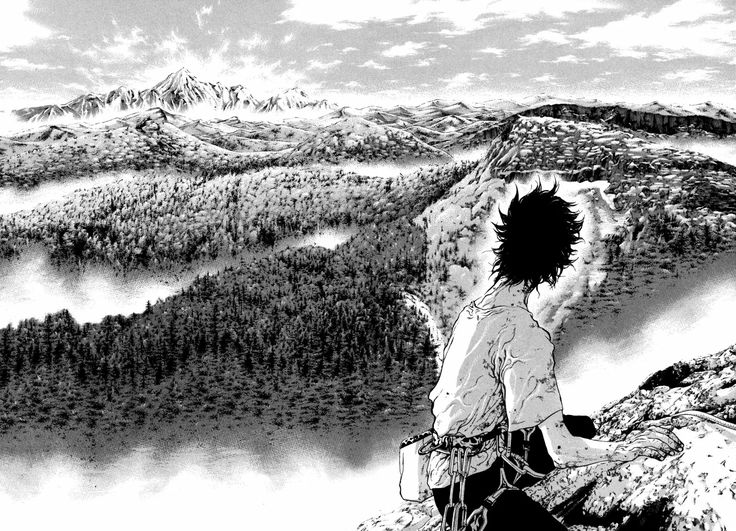
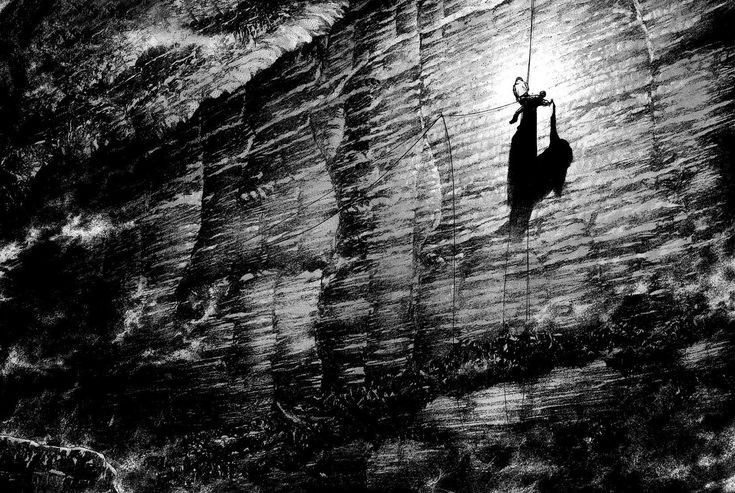
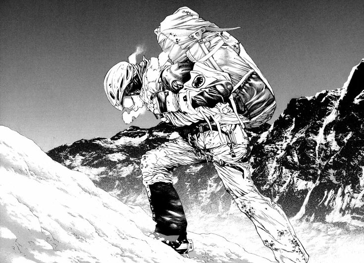
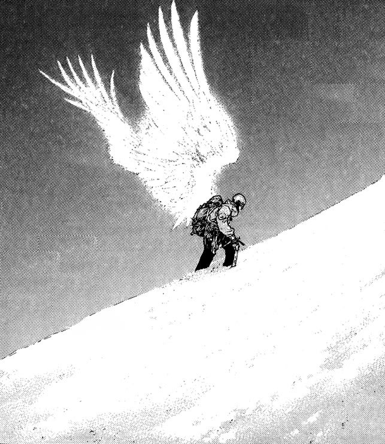
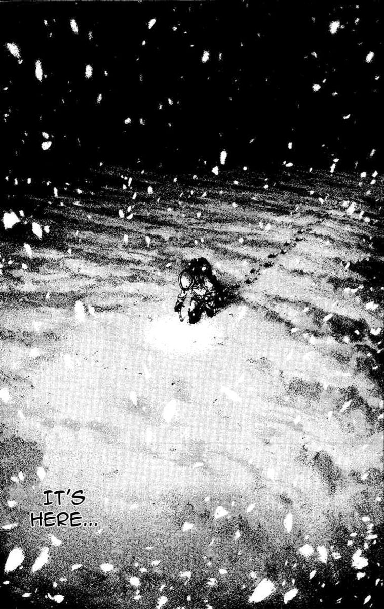
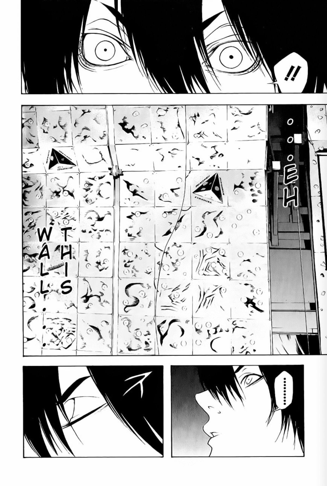

Sakamoto Shinichi • Kokou no Hito
O escalador solitário que desafiou os limites da existência humana
「山に登ることは、自分自身を見つけることだ」
"Escalar uma montanha é encontrar a si mesmo. No topo, não há ninguém — apenas o vento, o silêncio e a verdade crua de quem você realmente é."
— Mori Buntarou

Arco Inicial
Tudo começa quando Mori, um estudante introvertido e solitário, é desafiado a escalar a parede externa da escola. Nesse momento, algo desperta dentro dele — uma conexão visceral com a rocha, com a altura, com o vazio.

Conflito Interno
Mori rejeita a sociedade, os relacionamentos e as convenções. A escalada se torna sua única linguagem. Ele encontra paz na solidão das montanhas, mas a um custo humano devastador — amigos, amores e conexões se desfazem.


Obsessão
Sem cordas. Sem parceiro. Sem rede de segurança. Mori abraça a escalada solo — a forma mais pura e perigosa do alpinismo. Cada movimento é um diálogo entre a vida e a morte, entre o corpo e a rocha.

Clímax
O K2 — a segunda montanha mais alta e a mais mortal do mundo. Mori enfrenta não apenas a natureza em seu estado mais brutal, mas também os limites de seu próprio corpo e mente. É aqui que a linha entre determinação e loucura desaparece.

Ficha do Personagem
Nome Completo
MORI BUNTAROU
森 文太郎 — Baseado no alpinista real Katou Buntarou
Mangá
KOKOU NO HITO
Escrito por Sakamoto Shinichi, publicado de 2007 a 2011
Personalidade
INTROVERTIDO
Reservado, obsessivo, profundamente introspectivo e avesso a relações sociais
Especialidade
FREE SOLO
Escalada em rocha e montanha sem cordas ou equipamento de segurança
Motivação
TRANSCENDÊNCIA
A busca por significado através do confronto com a natureza e a morte
Tema Central
SOLIDÃO
O peso e a beleza de estar completamente sozinho consigo mesmo
Cronologia
Capítulo 1
Na escola, Mori aceita o desafio de escalar o prédio. É o primeiro contato com algo que dá sentido à sua vida sem propósito.
Desenvolvimento
Mori descobre o bouldering e começa a treinar obsessivamente. Cada rocha se torna um enigma a ser resolvido com o corpo.
Conflito
Amizades e relacionamentos se deterioram. Mori é incapaz de equilibrar sua obsessão com as necessidades humanas básicas de conexão.
Ascensão
Das paredes artificiais para as montanhas reais. Mori começa a enfrentar escaladas cada vez mais perigosas nos Alpes japoneses.
Transformação
Sozinho, no inverno, sem equipamento adequado. Mori desafia as montanhas na estação mais mortal — buscando algo além da sobrevivência.
Clímax
O desafio final. A montanha mais perigosa do mundo. Aqui, Mori confronta tudo — o frio, a morte, a solidão e o significado de existir.
Epílogo
No fim, resta apenas o silêncio. A montanha não julga, não perdoa, não celebra. Ela simplesmente existe — assim como Mori.
